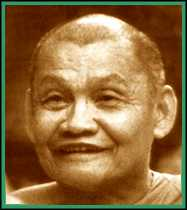

|
VENERABLE
AJAHN CHAH
|
 |
|
After finishing his basic schooling, he spent three years as a novice before returning to lay life to help his parents on the farm. At the age of twenty, however, he decided to resume monastic life, and on April 26, 1939 he received upasampada (bhikkhu ordination). Ajahn Chah's early monastic life followed a traditional pattern, of studying Buddhist teachings and the Pali scriptural language. In his fifth year his father fell seriously ill and died, a blunt reminder of the frailty and precariousness of human life. It caused him to think deeply about life's real purpose, for although he had studied extensively and gained some proficiency in Pali, he seemed no nearer to a personal understanding of the end of suffering. Feelings of disenchantment set in, and finally (in 1946) he abandoned his studies and set off on mendicant pilgrimage. He walked some 400 km to Central Thailand, sleeping in forests and gathering alms food in the villages on the way. He took up residence in a monastery where the vinaya (monastic discipline) was carefully studied and practised. While there he was told about Venerable Ajahn Mun Buridatto, a most highly respected Meditation Master. Keen to meet such an accomplished teacher, Ajahn Chah set off on foot for the North East in search of him. At this time Ajahn Chah was wrestling with a crucial problem. He had studied the teachings on morality, meditation and wisdom, which the texts presented in minute and refined detail, but he could not see how they could actually be put into practice. Ajahn Mun told him that although the teachings are indeed extensive, at their heart they are very simple. With mindfulness established, if it is seen that everything arises in the heart-mind . . . right there is the true path of practice. This succinct and direct teaching was a revelation for Ajahn Chah, and transformed his approach to practice. The Way was clear. For the next seven years Ajahn Chah practised in the style of the austere Forest Tradition, wandering through the countryside in quest of quiet and secluded places for developing meditation. He lived in tiger- and cobra-infested jungles, using reflections on death to penetrate to the true meaning of life. On one occasion he practised in a cremation ground, to challenge and eventually overcome his fear of death. Then, as he sat cold and drenched in a rain storm, he faced the utter desolation and loneliness of a homeless monk. In 1954, after years of wandering, he was invited back to his home village. He settled close by, in a fever-ridden, haunted forest called 'Pah Pong'. Despite the hardships of malaria, poor shelter and sparse food, disciples gathered around him in increasing numbers. The monastery which is now known as Wat Pah Pong began there, and eventually branch monasteries were also established elsewhere. In 1967 an American monk came to stay at Wat Pah Pong. The newly ordained Venerable Sumedho had just spent his fist vassa ('Rains' retreat) practising intensive meditation at a monastery near the Laotian border. Although his efforts had borne some fruit, Venerable Sumedho realised that he needed a teacher who could train him in all aspects of monastic life. By chance, one of Ajahn Chah's monks -- one who happened to speak a little English! -- visited the monastery where Venerable Sumedho was staying. Upon hearing about Ajahn Chah, he asked to take leave of his preceptor, and went back to Wat Pah Pong with the monk. Ajahn Chah willingly accepted the new disciple, but insisted that he receive no special allowances for being a Westerner. He would have to eat the same simple alms food and practise in the same way as any other monk at Wat Pah Pong. The training there was quite harsh and forbidding. Ajahn Chah often pushed his monks to their limits, to test their powers of endurance so that they would develop patience and resolution. He sometimes initiated long and seemingly pointless work projects, in order to frustrate their attachment to tranquillity. The emphasis was always on surrender to the way things are, and great stress was placed upon strict observance of the vinaya. In the course of events, other Westerners came through Wat Pah Pong. By the time Venerable Sumedho was a bhikkhu of five vassas, and Ajahn Chah considered him competent enough to teach, some of these new monks had also decided to stay and train there. In the hot season of 1975, Venerable Sumedho and a handful of Western bhikkhus spent some time living in a forest not far from Wat Pah Pong. The local villagers there asked them to stay on, and Ajahn Chah consented. Thus Wat Pah Nanachat ('International Forest Monastery') came into being, and Venerable Sumedho became the abbot of the first monastery in Thailand to be run by and for English-speaking monks. In 1977, Ajahn Chah was invited to visit Britain by the English Sangha Trust, a charity with the aim of establishing a locally-resident Buddhist Sangha. He took Venerable Sumedho and Venerable Khemadhammo along, and seeing the serious interest there, left them in London at the Hampstead Vihara (with two of his other Western disciples who were then visiting Europe). He returned to Britain in 1979, at which time the monks were leaving London to begin Chithurst Buddhist Monastery in Sussex. He then went on to America and Canada to visit and teach. After this trip, and again in 1981, Ajahn Chah spent the 'Rains' away from Wat Pah Pong, since his health was failing due to the debilitating effects of diabetes. As his illness worsened, he would use his body as a teaching, a living example of the impermanence of all things. He constantly reminded people to endeavour to find a true refuge within themselves, since he would not be able to teach for very much longer. Before the end of the 'Rains' of 1981, he was taken to Bangkok for an operation; it, however, did little to improve his condition. Within a few months he stopped talking, and gradually he lost control of his limbs until he was virtually paralysed and bed-ridden. From then on, he was diligently and lovingly nursed and attended by devoted disciples, grateful for the occasion to offer service to the teacher who so patiently and compassionately showed the Way to so many. |
|
| Home Page |